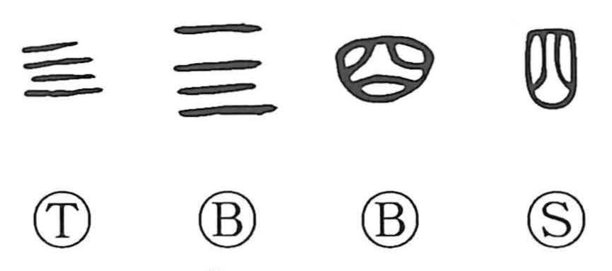

四

Kun: yotsu, yo, yottsu, yon | On: shi
four ・ the number four
Explanation
The earliest sign for four consisted of four horizontal strokes, corresponding to the counting marks used for the smaller numbers. Its numerical function was therefore immediately visible.
The received 四 belongs to a different graphic history. It is a shortened form associated with 呬, a character for breathing out, and was borrowed for the number because of its sound. The enclosing shape and inner strokes preserve that earlier mouth-and-breath form.
Once established as the numeral, 四 could also express four times or the four directions. The same numerical value enters 駟, a team of four horses. The familiar numeral thus continues a sound loan alongside the older tally-sign tradition.